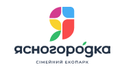
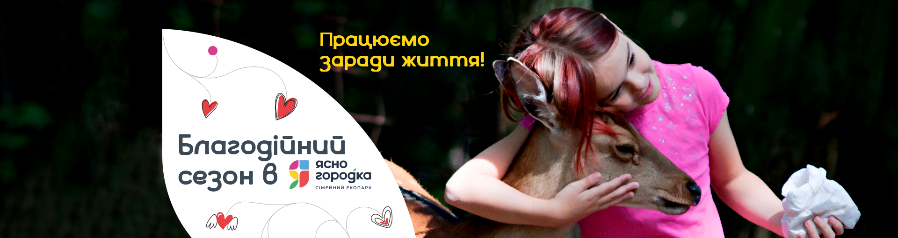
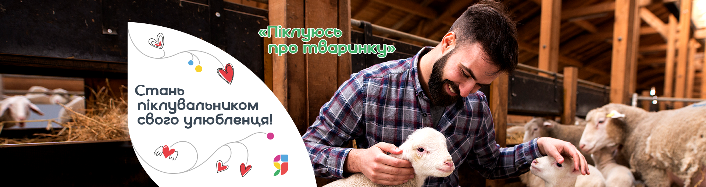
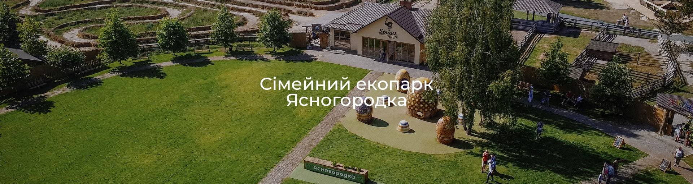
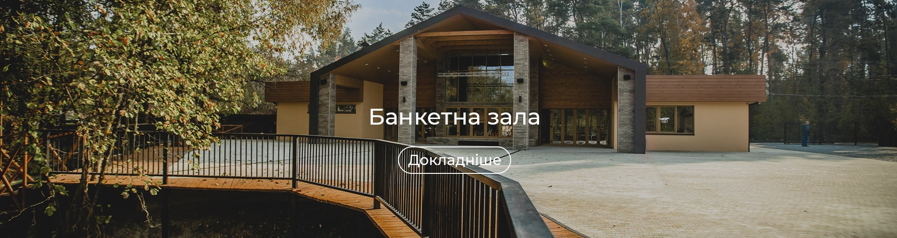

з 10:00 до 17:00 | +38 096 096 55 77
вихідні - з 10:00 до 19:00





Страусова ферма
Запрошуємо всіх відвідати унікальну і найбільшу ферму страусів, яка розташована на території сімейного еко-парку Ясногородка.
Тут ви дізнаєтеся про страусів все-все-все, адже тут представлені практично всі різновиди страусів, кожну годину проводяться цікаві пізнавальні екскурсії. Наші страуси фотогенічні і люблять фотографуватися, а ще їх можна погодувати. Приїжджайте всією родиною!
Контактний зоопарк
Дружнє спілкування з тваринами – найкраща терапія для дітей і дорослих. Ми зібрали і постійно поповнюємо велику колекцію домашніх і диких тварин в просторих вольєрах на території сімейного Екопарку Ясногородка.
Запрошуємо дорослих і дітей на екскурсію в контактний зоопарк, познайомитись з нашими тваринами.